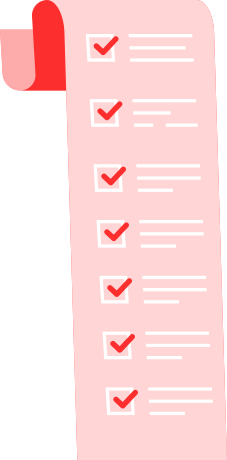

TATA TERTIB PERPUSTAKAAN SMK TELKOM BANDUNG
I. Syarat-syarat Menjadi Anggota Perpustakaan :
- Yang menjadi anggota Perpustakaan SMK Telkom Bandung : siswa, guru, karyawan, Tata Usaha, dan alumni yang telah mendapat izin khusus dari pihak Perpustakaan.
- Mengisi formulir anggota Perpustakaan
- Menyerahkan 3 lembar pas photo ukuran 2×3.
II. Cara Peminjaman :
- Seluruh anggota Perpustakaan SMK Telkom Bandung berhak menggunakan / meminjam koleksi-koleksi yang ada di Perpustakaan.
- Anggota yang meminjam harus memperlihatkan kartu anggotanya.
- Anggota yang akan memperpanjang pinjaman, bukunya harus dibawa.
- Anggota dapat meminjam buku maksimal 3 buah (untuk pinjaman harian
- Lama peminjaman buku bagi siswa selama 1 minggu dan dapat di perpanjang selama 3 kali masa peminjaman.
- Lama peminjaman bagi guru selama 1 tahun (Khusus buku text book)
III. Pemustaka :
Pemustaka adalah pengguna perpustakaan baik secara perseorangan, kelompok, yang memanfaatkan fasilitas layanan Perpustakaan.
IV. Tata Tertib Perpustakaan :
TATA TERTIB PENGUNJUNG
- Setiap pengunjung diwajibkan mengisi buku kunjungan Perpustakaan.
- Pengunjung dilarang merokok, makan, dan minum di dalam perpustakaan
- Pengunjung dilarang menimbulkan suara gaduh/bising yang dapat mengganggu pengunjung lain.
- Pengunjung harus menjaga kebersihan, kerapihan, dan kesopanan.
- Pengunjung dilarang merusak buku (merobek, melipat, mencorat-coret, atau mengotori bahan pustaka).
- Buku yang telah selesai dibaca harus dikembalikan ke tempat semula.
TATA TERTIB PEMINJAMAN BUKU
- Setiap peminjam harus menyertakan kartu anggota perpustakaan.
- Peminjaman harus dilakukan sesuai jadwal yang ada.
- Peminjam harus datang sendiri dalam proses peminjaman.
- Jumlah buku yang boleh di pinjam maksimal 3 eksemplar.
- Jangka waktu peminjaman selama 1 minggu dan dapat diperpanjang sebanyak 2 kali.
- Keterlambatan pengembalian akan dikenakan denda sebesar Rp 1000,00/hari/buku.
- Apabila buku yang dipinjam rusak atau hilang, wajib mengganti buku yang sama.
- Buku yang di pinjam untuk di bawa pulang maksimal 3 eksemplar.
V. Pemakai Jasa Komputer/ Internet:
Setiap siswa diperbolehkan untuk menggunakan jasa layanan komputer dan internet yang tersedia di Perpustakaan.
Catatan:
- Bagi siswa kelas XII yang akan keluar/telah lulus wajib memiliki surat bukti bebas Perpustakaan.
- Bagi siswa anggota Perpustakaan yang pindah wajib lapor ke petugas Perpustakaan.
- Bagi siswa kelas XII yang telah lulus, diwajibkan untuk menyumbangkan buku ke Perpustakaan (akhir tahun ajaran) sebanyak 1 buku. Jenis buku yang di sumbangkan berupa buku-buku fiksi atau buku produktif.
